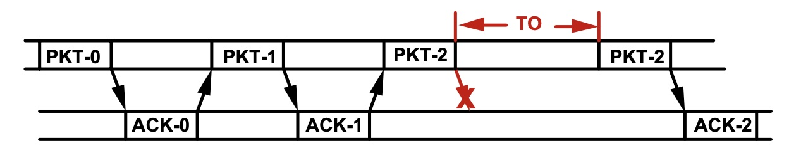
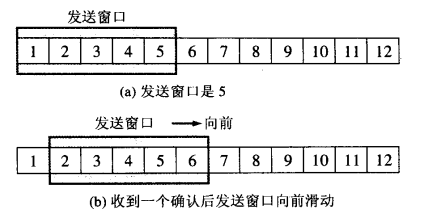

ARQ是什么
自动重传请求（Automatic Repeat reQuest），从名字看来，虽然被称为一种协议，但是看起来像是一种策略
ARQ，也可以是 Automatic Repeat Query 的缩写，是一种在数据传输时，使用确认（Acknoledgements，就是我们常说的ACK，接收方发送一个消息，告诉发送方，自己是否正确接到了一个包体）和超时（Timeouts，在收到一个确认消息之前，等待的一个确定的时间段）机制，在不可靠的网络上，实现可靠的数据传输的错误控制方法。如果发送方在超时之前没有收到确认，通常会重新传输相应的包体，直到收到确认或者重试超过一定的次数。
维基百科
常见策略
停止等待ARQ（Stop & Wait）
最为原始的一种ARQ实现方式。如下图：
- 发送方发送一帧后，必须等待接收方确认（ACK）才能发送下一帧。
- 发送方发送完一个帧后，就会设置一个超时计时器，如果超时计时器到期之前没有收到接收方发来的确认信息，则会重发刚发送过的分组；如果收到确认信息，则撤销该超时计时器。

连续ARQ
连续ARQ通常是结合滑动窗口协议来使用的，发送方需要维持一个发送窗口，如下图所示：

图(a)是发送方维持的一个发送窗口，它的意义在于，位于发送窗口的5个分组都可以连续发送出去，而不需要等待对方的确认，这样大大提高了信道的利用率。
连续ARQ协议规定，发送方每收到一个确认，就把发送窗口向前滑动一个分组的位置。例如上面的图（b），当发送方收到第一个分组的确认，就把发送窗口向前移动一个分组的位置。如果原来已经发送了前5个分组，则现在可以发送窗口内的第6个分组。
若发送过程中出现错误，连续ARQ采用的两种方式如下：
- 回退N帧（GO back N)
- 接受点丢弃从第一个没有收到的数据包开始的所有数据包
- 发送点收到NACK后，从NACK中指明的数据包开始重新发送
- 选择性重传（Selective Repeat）
- 发送点连续发送数据包但对每个数据包都设有一个计时器
- 当在一定时间内没有收到某个数据包的ACK时，发送点只发送那个没有ACK的数据包
总结
ARQ是一种在数据传输过程中，错误控制的策略，保证了数据的完整性和有序性。核心目的是在不可靠的网络上实现可靠的传输。比如，无线通信中在WCDMA和cdma2000无线通信中都采用了选择性重传ARQ和混合ARQ。
在服务端开发方面，ARQ的思想给我们很多的启发。此外，这种策略的学习和理解，是我们理解更复杂的网络协议的基础。